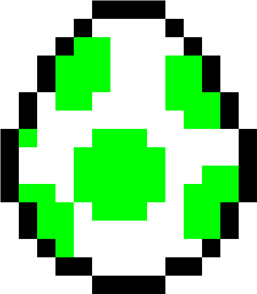

<div class="element-container">
    <div class="element-counter">
        <div class="counter">
            {{gameInstance.elementsCount.toFixed(1)}} poussins
        </div>
        <div class="per-second">
            {{gameInstance.perSecond.toFixed(1)}} par secondes
        </div>
    </div>
    
</div>

<!-- 
<script>
    if (document.body.animate) {
        document.querySelector('.element').addEventListener('click', pop);
    }

    function pop(e) {
        // Quick check if user clicked the button using a keyboard
        if (e.clientX === 0 && e.clientY === 0) {
            const bbox = document.querySelector('.element').getBoundingClientRect();
            const x = bbox.left + bbox.width / 2;
            const y = bbox.top + bbox.height / 2;
            createParticle(x, y);
        } else {
            for (let i = 0; i < 1; i++) {
                // We call the function createParticle 30 times
                // As we need the coordinates of the mouse, we pass them as arguments
                createParticle(e.clientX, e.clientY);
            }
        }
    }

    function createParticle(x, y) {
        const particle = document.createElement('particle');
        document.body.appendChild(particle);

        // Calculate a random size from 5px to 25px
        const size = 25;
        particle.style.width = `${size}px`;
        particle.style.height = `${size}px`;
        // Generate a random color in a blue/purple palette
        particle.style.color = "#24292f";
        particle.innerHTML = '+1';
        // Generate a random x & y destination within a distance of 75px from the mouse
        const destinationX = x + (Math.random() - 0.5) * 2 * 75;
        const destinationY = y + (Math.random() - 2) * 2 * 75;

        // Store the animation in a variable as we will need it later
        const animation = particle.animate([
            {
                // Set the origin position of the particle
                // We offset the particle with half its size to center it around the mouse
                transform: `translate(-50%, -50%) translate(${x}px, ${y}px)`,
                opacity: 1
            },
            {
                // We define the final coordinates as the second keyframe
                transform: `translate(${destinationX}px, ${destinationY}px)`,
                opacity: 0
            }
        ], {
            // Set a random duration from 500 to 1500ms
            duration: Math.random() * 1000 + 500,
            easing: 'cubic-bezier(0, .9, .57, 1)',
            // Delay every particle with a random value of 200ms
            delay: Math.random() * 200
        });

        // When the animation is complete, remove the element from the DOM
        animation.onfinish = () => {
            particle.remove();
        };
    }
</script> -->